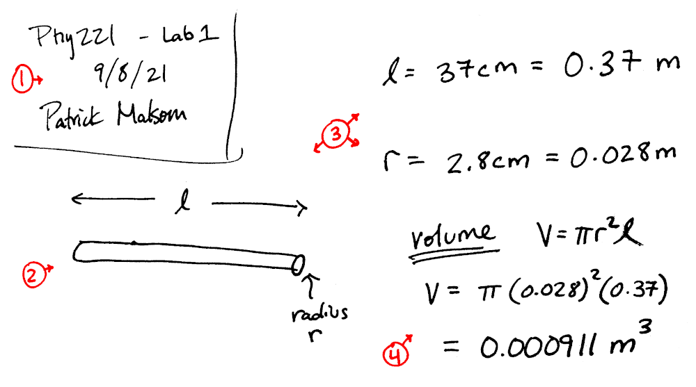
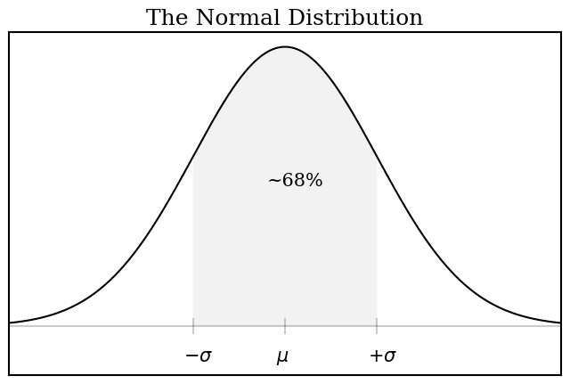
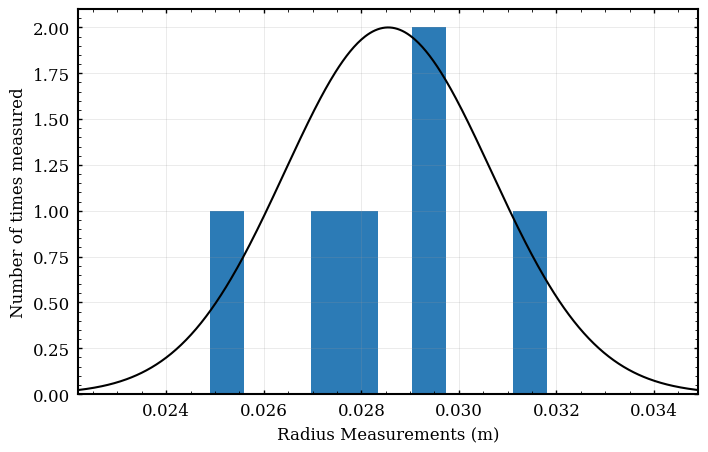

Lab 1 - Measurement
Table of Contents
NOTE: This exercise is to be completed in class. You do not have to complete this before class starts, but feel free to read/skim if you wish.
This is an introductory lab which will talk about measurement in a scientific sense. This lab displays some good measurement habits and guides you a through scientific measurement of the volume of a non-uniform object (a branch).
0.1. General objectives of an experimenter
The ability to make reliable and accurate measurements is an essential skill in many fields of engineering and experimental science. Some general traits of a good experimenter:
- Reliable experimenter: (at minimum) your final results are always double checked and you have high confidence in them.
- Accurate experimenter: you can quote the value of the measured quantity and appropriately estimate its error.
Becoming proficient at these two goals is not easy, and normally requires adjustment of everyday habit. Indeed, this rigid method of measurement is overkill for everyday tasks such as cutting a 2x4 to length or measuring the square footage of your house, but will enable the scientific calculation of experimental quantities. The long term objective is for you to develop a measurement routine which reinforces reliability and accuracy at all times.
0.2. What to record on paper
Please note that each of these should be recorded on a piece of paper! If you are working in a professional lab, you would want a lab notebook, which is a good idea when your job depends on high quality work. You can use your lecture notebook (or loose paper) for this lab course if you wish.
Record these FOUR things to paper! Your measurements and sketches will be checked at the end of the lab period and counts as 50% of your lab grade!
1: Description of the task
This one is easy. Put identifying info on your records. You do not need to write a paragraph. A descriptive name that points to supporting resources, along with a date, is often all that is necessary.
- Phy 221 - Lab 1 Measurement - Sept 08 2021 - P Malsom
If you move to a different part of the experiment, please make a new section in your notes. Again you do not need to write a paragraph, but please be descriptive.
2: Sketch of the system
Always make a sketch of the experiment (a picture is often worth a thousand words).
- Take your time making a sketch. You will want something clear to reference later.
- Make the sketch large enough that you can label dimensions and dynamics, but leave room to record measurements. I find around a quarter of the page is a nice size for a detailed drawing.
- Be deliberate in your handwriting style. Each of your variables should be distinguishable and unique (make sure \(u\) and \(\mu\) are distinguishable in your handwriting).
3: Record measurements, error and units to paper
This is a core part of the good measurement habits. Recording to paper is faster and more reliable than typing into a computer. /If you only use a computer, you will eventually lose data. This can be CATASTROPHIC if some of your data is interdependent. Please hear my warnings and record your data to a piece of paper. You can always re-enter data from paper if the computer loses it.
- Always record the measurements on the same page as the sketch. Data means nothing without a sketch to reference.
- Label your sketch with variables rather than actual numbers. (use \(\ell\) instead of \(0.1\))
- Record your error. Usually this is done with a “plus-minus”, but could also be a list of measurements used to find a standard deviation.
- Record your unit of measurement (please use SI units).
\[\ell=0.1 \pm 0.02~m\]
4: Calculate an estimate of the expected result
Before performing the actual analysis (preferably on a computer), you should evaluate some or all of the critical calculations with a calculator. Try to examine if this is what you expect the value to be. If it is not, review your measurements to find any mistakes!
This course will encourage you to use Python as a calculator and bugs are bound to show up in your code. This hand calculation serves as a double check to see if there is a mistake in your programming. It is very hard to find errors without a hand calculated estimate to use for comparison.
In the first experiment, you will make some basic measurements and estimate the volume of the piece of wood. This estimation will yield a quick result with marginal accuracy and gives no estimation of uncertainty.
0.3. Model the system
The first step towards making an estimate is to think up a simple model which describes the system. The branch is mostly straight and has a somewhat uniform radius, so lets make the model a uniform cylinder of radius \(r\) and length \(\ell\) The volume of the cylinder is the cross sectional area (\(\pi r^2\)) multiplied by the length:
\[V = \pi r^2 \, \ell\]
Make some basic measurements with the meter stick and calculate an estimate for the volume:
Please record these quantities to paper!
- \(r\) : average radius (meters)
- \(\ell\) : average length (meters)
Here is simple python script to calculate the Volume. You can copy and paste this code into your CoLab Jupyter notebook. Please enter your own values for rad and length and hit Shift+Enter to compute the volume:
# radius of the branch in meters radius = 0.028 # length of the branch in meters length = 0.37 # calculate the volume and print result vol = 3.1415926*radius**2 * length print("Volume = ",vol," m^3")
Volume = 0.000911313181408 m^3
Here is an example of minimal lab notes highlighting these four essentials. I encourage you to write more than this if you wish:

Checkpoint:
- Measure the average radius and length of the branch in \(m\).
- Calculate an estimate of the volume of the branch in \(m^3\) and record to paper.
- Your lab notes should now have a (1) title, (2) sketch, (3) measurements and (4) an estimate.
1. Measuring volume using a cylindrical model
While the previous exercise is a nice start, it is far from scientific. It is missing a key part of any science measurement: estimated error. Error estimation is a complicated and deep topic, and I will have to get into a few of the details to help you understand how to correctly estimate (or better, calculate) the error in a measurement.
This type of error is sometimes called random error, and for good reason. It arises from any random inconsistencies coming from measurement devices. An easy example is a scale (for indirectly measuring mass). The scale will have an accuracy, and the manufacturer may quote the error directly on the device. Each time you measure the mass using the scale, the measurement will be slightly different. This is random measurement error.
Conveniently, the measurement error is allowed to manifest from multiple measurement devices at once. For example, when you measure the branch, there will be some measurement error from the variation in radius, but also some measurement error from the caliper. One of these errors is much larger than the other, but both will be included intrinsically in our definition of error.
Mathematical Background: Normal (Gaussian) Distribution
Before we begin, I want to refresh your understanding of the normal distribution. The normal distribution is commonly written as the following function:
\[f(x) = \frac{1}{\sqrt{2 \pi \sigma^2}} ~ \exp \left(- \frac{(x-\mu)^2}{2\sigma^2} \right)\]
When you examine this function, please remember that l\(\sigma\) (sigma) and \(\mu\) (mu) are fixed values, so the mathematical function looks like \(f(x)=e^{-x^2}\), which is a “bell curve”. The term in the front (\(1/\sqrt{2\pi\sigma^2}\)) is a normalization factor, which is a constant because \(\sigma\) is a known value.
- \(\mu\) - Mean - most probable measurement
- \(\sigma\) - Standard Deviation - spread of the measurements
Approximately 68% of all measurements will fall into the “one standard deviation” range. A measurement is said to have a value of the mean (\(\mu\)) and an error of one standard deviation (\(\sigma\)). You should quote your value as:
\[E[x] = \mu \pm \sigma\]
import matplotlib as mpl import matplotlib.pyplot as plt import numpy as np mu = 0.0 sigma= 1.0 x=np.linspace(-3*sigma,3*sigma,num=500) f=1/np.sqrt(2*np.pi*sigma**2) * np.exp(- (x-mu)**2/(2*sigma**2)) xfill=np.linspace(-sigma+mu,sigma+mu,num=500) zfill=np.zeros(500) ffill=1/np.sqrt(2*np.pi*sigma**2) * np.exp(- (xfill-mu)**2/(2*sigma**2)) fig, ax = plt.subplots() # a figure with a single Axes plt.title("The Normal Distribution") ax.text(-0.2, 0.2, "~68%", fontsize=15) ax.text(-1.1, -0.05, r'$-\sigma$', fontsize=15) ax.text(0.9, -0.05, r'$+\sigma$', fontsize=15) ax.text(-0.1, -0.05, r'$\mu$', fontsize=15) plt.yticks([]) plt.xticks([]) plt.ylim([-0.07,0.42]) ax.plot(x,f,color='black') ax.plot([-1,-1],[-0.01,0.01],color='black',alpha=0.2) ax.plot([-3*sigma,3*sigma],[0,0],color='black',alpha=0.2) ax.plot([0,0],[-0.01,0.01],color='black',alpha=0.2) ax.plot([1,1],[-0.01,0.01],color='black',alpha=0.2) ax.fill_between(xfill,zfill,ffill, facecolor='black', alpha=0.05) #plt.show() plt.savefig("img/01-normalcurve.png",bbox_inches='tight') plt.close()

1.1. Estimation of error in a measured value
For this experiment, you have two quantities to measure: the radius and the length. Lets start by measuring the radius, and then we can use a shortcut for the measurement of the length.
The radius of the branch is obviously non-uniform. Every time you measure, you will get a slightly different answer. This is what it means to have an Error in a measurement. But the question remains: how should you report the correct amount of error? This question is not easily answered, and a full treatment would be seen in a statistics or mathematics course on probability distributions. If the data is normally distributed (we will assume this for the entire course), the correct value for the error is the standard deviation.
The standard deviation is the \(\sigma\) (sigma) in the above mathematical equation. 68% of all of the measurements will fall in this range (sometimes called “one sigma”). The standard deviation is easily calculated using python or other programs such as excel or even some calculators. Below is some code which you can use to calculate the mean and standard deviation of a set of radius measurements.
Please make many measurements of the radius of your non-uniform object. Aim for 20-40 measurements from different locations. In general, the more measurements you make, the better your results will be, but there are diminishing returns (as \(1/\sqrt{N}\)). The list of measurements can just be written out in a list or table in your lab notes.
Now lets use a computer to calculate the standard deviation of your set of measurements. Please enter your list of radii measurements into the following code to find the standard deviation:
import numpy as np diameter=[0.0283,0.0296,0.0249,0.0293,0.0318,0.0274] radii=np.array(diameter)/2 print(radii) print("Mean = ", np.mean(radii)) print("StdDev= ", np.std(radii))
#+BEGIN_EXAMPLE [0.01415 0.0148 0.01245 0.01465 0.0159 0.0137 ] Mean = 0.014275000000000001 StdDev= 0.0010593826818797198 #+END_EXAMPLE
Thus, the value for the radius would be quoted as \(r=0.286 \pm 0.021 ~m\).
A visualization of this process may be useful. Please insert your data into this code if you want to see a histogram (binning) of your data:
import matplotlib as mpl import matplotlib.pyplot as plt import numpy as np radii=[0.0283,0.0296,0.0249,0.0293,0.0318,0.0274] mu = np.mean(radii) sigma = np.std(radii) num_bins=10 normalization = np.max(np.histogram(radii,num_bins)[0]) x=np.linspace(mu-3*sigma,mu+3*sigma,num=500) f= normalization * np.exp(- (x-mu)**2/(2*sigma**2)) plt.xlabel("Radius Measurements (m)") plt.ylabel("Number of times measured") plt.plot(x,f,color='black') plt.hist(radii,num_bins) #plt.show() plt.savefig("img/01-radiusmeas.png",bbox_inches='tight') plt.close()

Measuring the length
Lets now take a shortcut to the measurement for the radius. The length is a fairly uniform measurement. For this type of measurement, you can take the shortcut to simply estimate your measurement error. Try to think about how much error would be appropriate in this measurement and simply write down your answer:
Measure the length with a meter stick and then estimate the uncertainty. Always remember to think about “one standard deviation” when estimating the error in a measurement.
1.2. Propagation of error for a calculated value
I want to be direct about this. This analysis is somewhat crude. There is an entire field devoted to this topic (statistics). I am just giving you the simplified (and most used) formula. You can read more on this topic as well as complete some example problems on the Lab Resources - Error Propogation course webpage.
There are three main assumptions which are built in to the simplified error propagation which is often used by science and engineering analyses:
- The randomness is normally distributed (symmetric Gaussian distribution).
- Variables are independent of each other (error in length does not impact the error in radius).
- The function is approximately linear over the range of the error (necessary for Taylor expansion).
These assumptions are often very close to correct in real world experiments, and this error formula is frequently used in science and engineering. If you are running a very sensitive experiment, you may find these assumptions are false, and you may have to use more advanced statistics to estimate the error correctly (ex: the correlation matrix and non-symmetric probability distributions).
The procedure to calculate the error uses a new type of derivative known as the partial derivative (\(\partial\)), in which all variables except for the variable used for the derivative are regarded as constant. You will see this type of derivative used frequently in Calc III. Partial derivatives are nice because you can take the derivative of any function in the same way you would with derivatives in Calc 1 (normal differentiation rules). Again see the Lab Resources - Error Propogation course webpage for details and examples.
The formula to calculate the error in a function \(f(A,B,\ldots)\) with independent variables \(A\), \(B\), \(\ldots\) is given by:
\[E[ f(A,B,\ldots) ] = \sqrt{\left( \frac{\partial f}{\partial A} E[A] \right)^2+\left( \frac{\partial f}{\partial B} E[B] \right)^2+\cdots}\]
Lets apply this to the volume formula: if we set \(f(A,B) = V(r,\ell) = \pi r^2 \ell\), the error in the volume becomes: \[E[V] = \sqrt{ \left( \frac{\partial V}{\partial r} E[r] \right)^2 + \left( \frac{\partial V}{\partial \ell} E[\ell] \right)^2}\] Please do not let this formula scare you, there are two derivatives, but they are not very difficult to evaluate (remember \(V = \pi r^2 \ell\)) \[\frac{\partial V}{\partial r} = \frac{\partial}{\partial r} \pi r^2 \ell = \pi \ell \frac{\partial}{\partial r} r^2 = \pi \ell (2\cdot r) = 2 \pi r \ell\]
\[\frac{\partial V}{\partial \ell} = \frac{\partial}{\partial \ell} \pi r^2 \ell = \pi r^2 \frac{\partial}{\partial \ell} \ell = \pi r^2\] This gives the final error formula as: \[E[V] = \sqrt{ \left( (2\pi r \ell) E[r] \right)^2 + \left( (\pi r^2) E[\ell] \right)^2}\] This is the final result for the error in the volume based off of the spherical model. This formula looks complicated, but you know the right-hand-side and can simply calculate!
import numpy as np radius = 0.0286 Eradius = 0.0021 length = 0.37 Elength = 0.01 V= np.pi * radius**2 * length EV=np.sqrt( (2*np.pi*radius*length*Eradius)**2 + (np.pi*radius**2*Elength)**2 ) print("Volume = ", V, "+-", EV)
#+BEGIN_EXAMPLE Volume = 0.0009507879369642138 +- 0.00014197115977463345 #+END_EXAMPLE
Please note that a computer can do all of this work for you! Please refer to Lab Resources - Error Propogation course webpage for an example.
Calculate the error estimate using your own measurements. You can perform the calculation by hand, or you can reuse the code above in Jupyter.
1.3. Systematic Error
Now is a very good time to discuss systematic error. Systematic error is an error which is present but unaccounted and skews your results consistently in one direction. They commonly arise from oversimplified models. This type of error is often hidden from view and you must be careful to reassess your measurement techniques to minimize these errors.
As an example, lets imagine your object has another cylinder embedded into it (maybe where a branch was growing out). By making our model a uniform cylinder, we ignore any other radial bulges which directly impacts our calculation in one direction. It does not matter how many times you measure the branch, the result will be skewed towards more volume because of the protrusion. Systematic errors can lead to incorrect interpretation of data, because the error is often buried in assumptions which are easy to overlook. It is a good habit to write down any possibly dubious assumptions in your notes (paper or typed) for discussion or thought later.
Checkpoint: Please think about any systematic errors which could possibly effect the experiment. What assumptions are dubious? Try to identify which error is the largest and highlight your thoughts in your lab notes.
2. Measuring volume using fluid displacement
A much more accurate method for measuring volume is to displace an incompressable liquid with the irregular cylinder. By measuring the change in water height in the cylinder, you can directly measure the volume of the stick. This method removes constraint that the model be a cylinder, and thus may reduce the error in measurement (Note the error is only small when the displacement of water is large, ie: a tube with a small radius will give better results than a tube of large radius).
Please make a model of this experiment and write out the formulae for the volume of a sphere on your lab notes. Take measurements of the radius of the tube and the height change of the water (remember to record errors!). Use the formula for volume and its error to quote a value for the volume and its error.
Checkpoint:
- Calculate the error in the volume using the fluid displacement method. (Please ask for help if needed)
- Compare your result to the measurement from part 2 using the cylinder model. Does the fluid displacement method agree with your results from the cylindrical model?